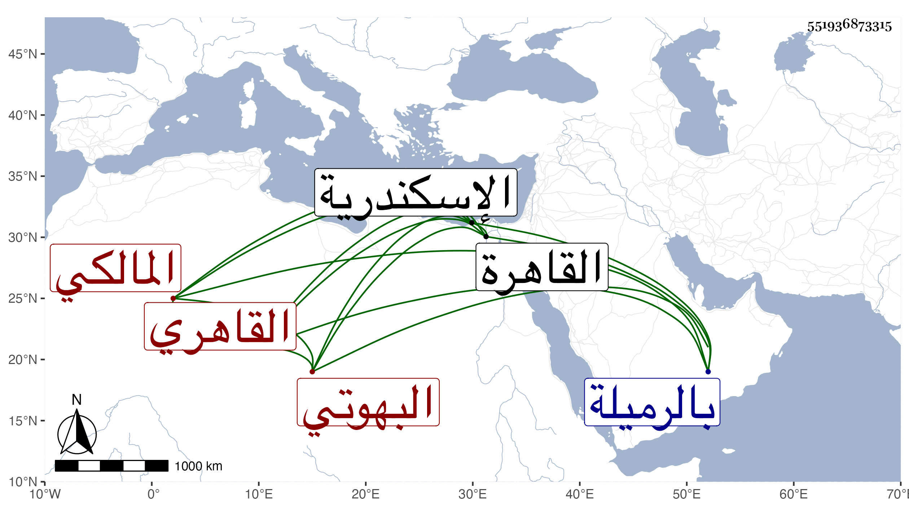

0902Sakhawi.DawLamic.ITO20230111-ara1.EIS1600.551936873315
Biography ID: 551936873315
448
حسن بن علي بن محمد البدر البهوتي القاهري المالكي نزيل مدرسة حسن بالرميلة وأحد العدول على باب خانقاه شيخو . ولد سنة خمس وسبعين وسبعمائة بالقاهرة ، ونشأ بها يتيما فقرأ القرآن والعمدة والرسالة في الفقه ، واشتغل بالفقه على التاج بهرام والشمس بن مكين المصري والبساطي وبالنحو على الشمس الشطنوفي ، وسمع المئة التي انتقاها ابن تيمية من البخاري علي الشمس محمد بن إسماعيل بن سراج الكفربطناوي الدمشقي قدم عليهم أنا به الحجار وكذا أخبر أنه سمع علي الغماري والعراقي ، وحدث سمع منه الفضلاء وحج غير مرة أولها سنة تسعين سنة بلوغه ، ودخل اسكندرية فرابط بها شهرا وتكسب بالشهادة . مات في أيام عيد النحر سنة خمس وأربعين رحمه الله ، وهو يشترك مع البدر الدميري الماضي قريبا في الاسم واسم الأب والجد والمذهب والحرفة والعصر وإن تأخر ذاك .
